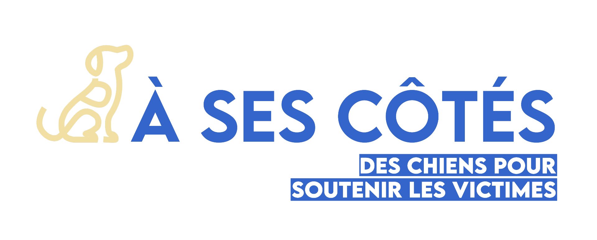
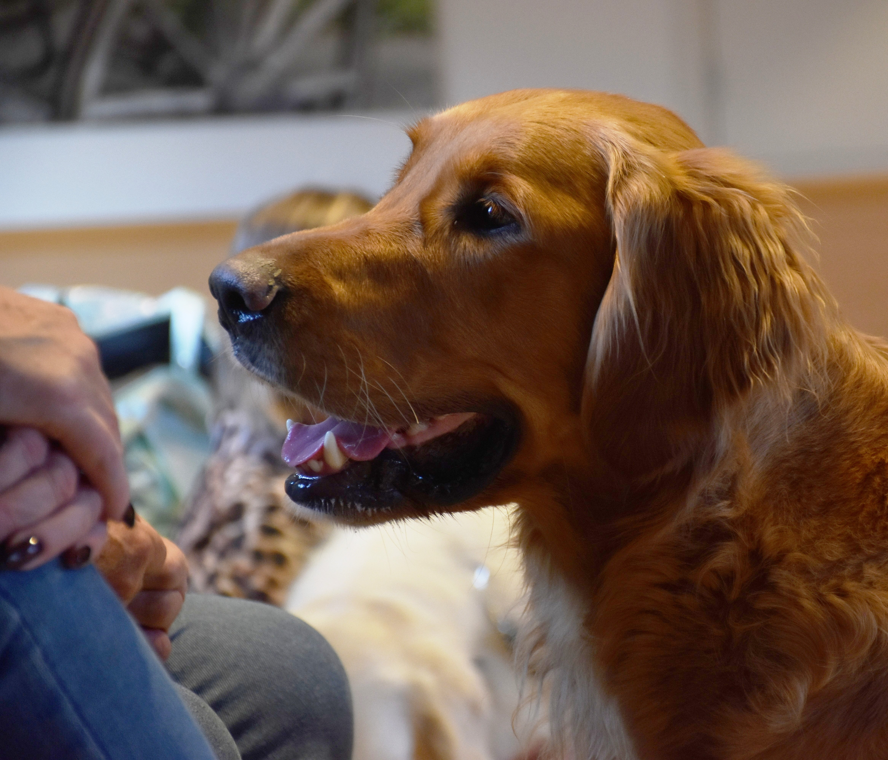
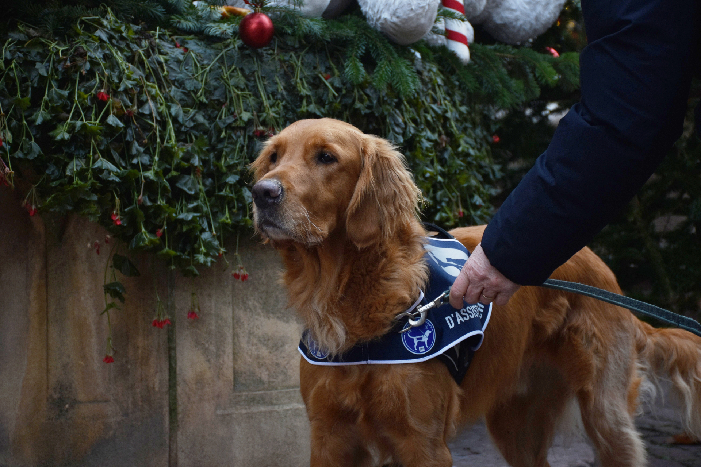
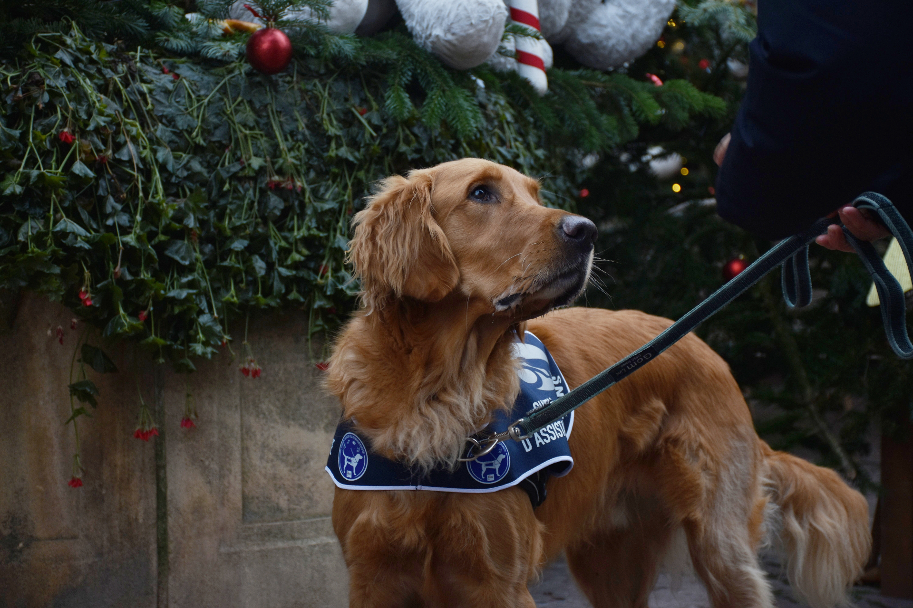

À Ses Côtés est un projet qui vous invite à découvrir le rôle des chiens d'assistance judiciaire.
Ces chiens sont spécialement formés pour accompagner les victimes d'infractions pénales et leur apporter un soutien moral dans l'épreuve du témoignage face à la justice.
Depuis sa mise en place en 2019 en France, ce dispositif tend à se généraliser dans chaque département sur le territoire. Mais il reste encore trop méconnu du grand public, d'où la nécessité de le mettre en lumière.
37
Chiens en activité
+
De 1 000 victimes accompagnées


